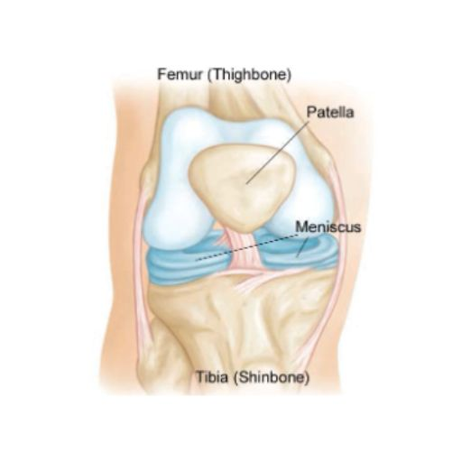
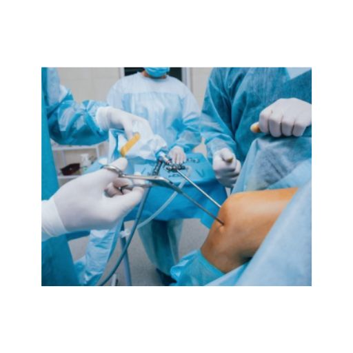

La rodilla es una de las articulaciones más complejas y esenciales del cuerpo humano. Une el fémur (hueso del muslo) con la tibia (hueso de la espinilla), mientras que la rótula (hueso de la rodilla) protege la articulación y facilita el movimiento. Además, el peroné aporta estabilidad.
Para garantizar un movimiento fluido y sin dolor, las superficies óseas están recubiertas de cartílago articular, un tejido liso y resistente que minimiza la fricción. Entre el fémur y la tibia se encuentran los meniscos, dos estructuras cartilaginosas en forma de C que amortiguan los impactos y aportan estabilidad.
Los ligamentos cruzados y colaterales mantienen la rodilla en su lugar y evitan movimientos excesivos. Los tendones conectan los músculos con los huesos para facilitar el movimiento, mientras que la membrana sinovial lubrica la articulación.

La artroscopia de rodilla es un procedimiento quirúrgico mínimamente invasivo que permite diagnosticar y tratar lesiones sin realizar grandes incisiones. Se utiliza un artroscopio, una microcámara que el cirujano introduce en la articulación para evaluar y reparar daños con precisión.

Este procedimiento es útil en casos como:
1️⃣ Anestesia – Generalmente general, aunque puede adaptarse a cada paciente.
2️⃣ Incisiones mínimas – Se hacen dos o tres pequeñas incisiones en la rodilla.
3️⃣ Visualización interna – Se introduce suero estéril para ampliar el espacio y mejorar la visibilidad.
4️⃣ Evaluación y tratamiento – Se insertan instrumentos quirúrgicos para reparar el daño.
Reparación o extracción de menisco dañado
Reconstrucción de ligamentos cruzados
Eliminación de fragmentos óseos sueltos
Corrección de la alineación de la rótula
Microfracturas para regeneración de cartílago
Movilidad progresiva – Puede que necesites muletas o una férula.
Control del dolor – Se recetarán analgésicos según necesidad.
Rehabilitación – Fisioterapia para fortalecer la rodilla.
Corrección de la alineación de la rótula
Microfracturas para regeneración de cartílago